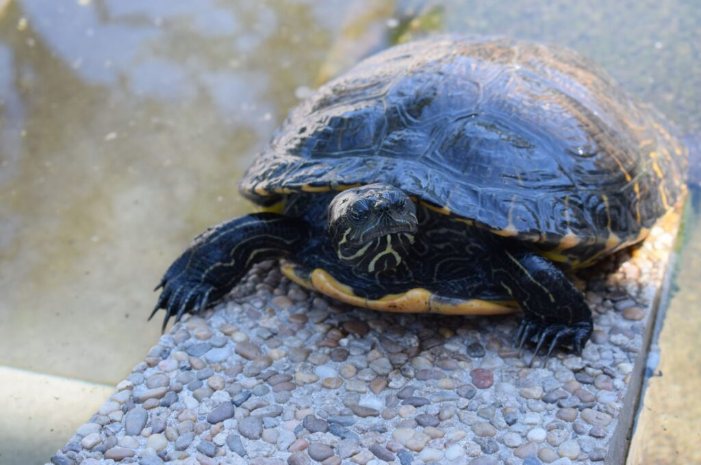
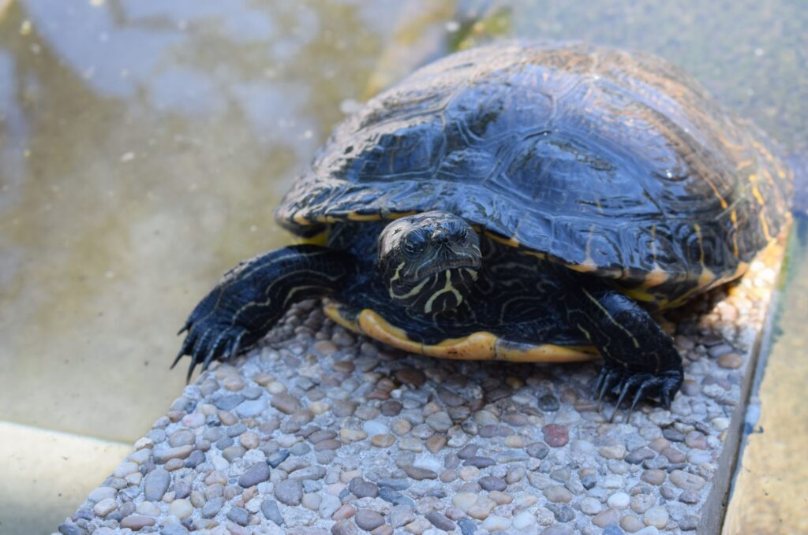

Żółw wodny to popularne zwierzę w domowych hodowlach. Wodny, a właściwie wodno-lądowy, stanowi wspaniały obiekt obserwacji – może godzinami wygrzewać się najlepiej w promieniach słońca, a międzyczasie wspaniale pływa. Piękne terrarium może być niezwykłą ozdobą każdego domu.
Żółwie uznawane są za zwierzęta długowieczne. W naturze potrafią dożyć setek lat. Żółwie hodowlane również żyją długo, ale zwykle nie dłużej niż 20 lat.
Opieka nad żółwiem nie sprawia dużo trudności, jednak wymaga od nas poznania zwyczajów tego gatunku. Właściwe żywienie i pielęgnacja, odpowiednie terrarium, a także temperatura dostosowana do wymagań żółwia to tylko kilka czynników, dzięki którym nasz nowy pupil poczuje się u nas bardzo dobrze. Żółw nie potrzebuje czułości i raczej trudno z nim się komunikować, ale z pewnością obserwacja tego wyjątkowego zwierzęcia dostarczy opiekunom dużo radości i satysfakcji. Posiadając podstawową wiedzę na temat hodowli żółwia, możemy cieszyć się z jego obecności przez długie lata.
 

Rozród żółwi wodnych jest bardzo trudny, ale możliwy, w naturze rozmnażają się zaraz po okresie hibernacji, czyli wczesna wiosną. Do kopulacji dochodzi w wodzie, potem samica wychodzi na ląd w poszukiwaniu odpowiedniego miejsca na gniazdo. Po założeniu gniazda i złożeniu jaj, następuje okres inkubacji trwający ok dwóch, trzech miesięcy. W naszym klimacie trudno jest o naturalne rozmnożenie, ponieważ optymalna temperatura inkubacji jaj wynosi 28 do 30 °C niezmiennie przez okres około 3 miesięcy. W Polsce nie ma takich temperatur dłużej niż miesiąc do maksymalnie półtora o ile dopisze ciepłe lato.